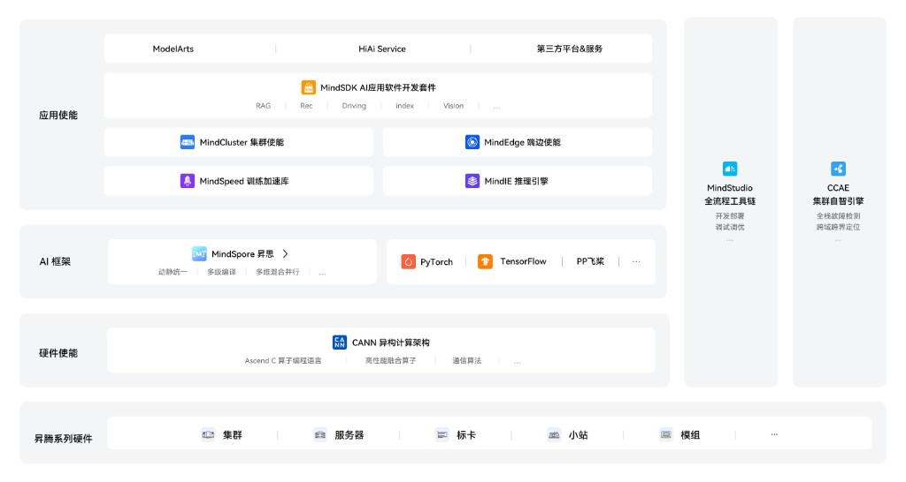
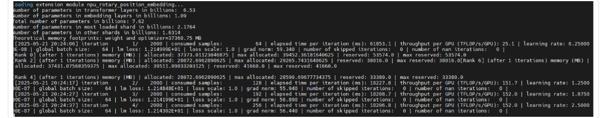

图片内容转译
把信息型图片的图意转写为可检索正文（alt、figcaption、内容转写或 Mermaid），让图中的结构与结论不再只存在于像素里。 可读 · 序号 5 · 对应 问题论证 · 图片图意 · 设计专项见 图片信息转文字。
对象
| 类型 | 说明 | 常见落点 |
|---|---|---|
| 官网·展示图 | 关键文案（标题、入口、角标）须为独立文字层，禁止烧入图片。图仅作背景，信息须有可抓文字。 | 活动 Banner、首页招揽 |
| 官网·架构图 | 层名与产品关系须以文字链接或旁注徽标（Markdown 形式）交付，禁止仅以图片承载。 | 平台栈、官网结构图 |
| 文档·架构图 | 流程与调度结论须以图题和图注交付，禁止仅以图片标注承载。 | 架构示意、调度图 |
| 文档·截图 | 截图中原文与结论须以正文交付，截图仅作对照。 | 训练日志、报错页 |
设计UI调整
调整建议
- 信息不烧图：标题与入口文案须独立于图片，禁止烧入图中。
- 图意成文：结构、结论与报错须以图注、旁注或正文交付，禁止仅靠读图。
- 图表格式规范：流程图、时序图、架构图优先交付 Mermaid 源码；表达不了时提供 SVG。
- 预留 figcaption 位：每张图下方预留图注 / 内容转写区域，纳入排版规范。
调整示例
官网·展示图 · 用独立文案表达 Banner 信息
反面

- 常见疏漏：标题与角标烧入海报，无独立文案层，机器无法识别 Banner 所传达的内容。 查看示例来源
正面

- 正确做法：标题与报名入口叠于图上，但须为独立文案；角标若承载信息，也须独立成文。
- 可免场景：1）图仅作氛围，不承载标题或入口信息时，可不加独立文案；2）标题与入口已在页内别处以文字形式存在，不单靠 Banner 承载时，图上可不叠加。
官网·架构图 · 用平行 MD 表达结构关系
反面
解决方案

- 常见疏漏：仅有架构图与标题，层名与产品关系未配独立文字，机器无法识别层级与依赖关系。 查看反面来源
正面
解决方案
MD- 正确做法：标题旁挂 MD 徽标，平行文档写清层级与产品关系（如 ascend-platform-stack.md）；本页图保留给人看。
- 可免场景：产品名已是真链，且另有概述页说明关系时，可不挂 MD 徽标。
文档·架构图 · 用图注表达图中结论
反面
图 Kernel 调度示意图

- 常见疏漏：仅有图题，调度结论未以图注交付。机器无法识别 Host / NPU 调度关系与结论。
正面
图 Kernel 调度示意图
图注：Host 进程运行在 CPU，负责发起计算任务。任务下发到 NPU 后，先进入任务调度器，再由调度器分配到 AI Core 0、AI Core 1 … AI Core N-1；各核承接子任务并并行执行，核数可按 N 扩展。
- 正确做法：图题保留，图下以图注交付结论。
文档·截图 · 用图注表达截图中的训练日志
反面
图 1 启动预训练

- 常见疏漏：参数量、迭代数、损失值等关键数据仅存于终端截图，图注未提取结论，机器无法判断预训练是否启动及关键指标表现。 查看反面来源
正面
图 1 启动预训练
图注：预训练已启动；总参数量约 7.62B（Transformer 层约 6.53B）。日志自 iteration 1/2000 起持续输出，单卡吞吐约 25.1 TFLOP/s/GPU，首步 lm loss 约 12.15。
- 正确做法：图题保留，截图中的终端结论须写进图注。
设计专项完整说明见 图片信息转文字。
文档内容调整
调整建议
- 替代文本：每一张图（<img>）必须提供非空的alt属性，简洁描述图片的内容和功能。。
- 禁止"见上图/下图"：正文中禁止出现"见上图/下图"等仅依赖视觉位置进行引用的语句，图片引用必须将图片中的关键信息用文字复述一遍。。
- 复杂图表转写：对于包含复杂逻辑的图表，必须在图片下方提供一个"图表内容转写"段落，用文字完整描述图表所表达的全部关键信息。。
- 替代格式优先：对于流程图、时序图、架构图，优先使用Mermaid等文本可渲染的图表格式代替不可读的PNG/JPG图片。。
- 装饰图片：纯装饰性的图标、分割线图片等，应使用CSS背景图或标记 alt=""（空字符串）。
调整示例
1. 图片 alt 文本与内容转写段落
Before · 无 alt 与转写
如图所示，Ascend C API 层次如下： 
After · alt + 内容转写段落
Ascend C API 自下而上分为五层：语言扩展层 C API、 基础 API、高阶 API、算子模板库、Python 前端。  *图1 Ascend C API 自下而上分为五层：语言扩展层 C API、基础 API、高阶 API、算子模板库、Python 前端。*
前端调整
调整建议
- HTML 结构实现：每张图片用 <figure> + <figcaption> 包裹，<img> 上填写 alt、title、data-llm-transcription 三个字段，每个 <figure> 需要有唯一 id 作为锚点。
- 复制链接按钮功能：figcaption 旁实现"复制链接"按钮，点击后将当前图片的锚点 URL 写入剪贴板，同时触发 toast 提示"已复制链接"，2秒后自动消失。
- Mermaid / SVG 渲染支持：研发侧引入 Mermaid 渲染库，支持在文档内容中直接嵌入 Mermaid 代码块并渲染为可交互图表；SVG 图表直接内联到 HTML 中，而不是作为 <img> 引用，保证文本可提取。
- Chunk 切片管道：将每张图片的 alt + figcaption 文字 + 图片前后的正文段落拼接为一个连续文本块，作为该图片的语义 chunk 供向量化索引使用；装饰性图片（aria-hidden="true"）跳过，不参与切片。
调整示例
1. figure + figcaption 语义结构
Before · 裸 <img>
<img src="api-arch.png">
After · 完整语义结构
<figure id="fig-api-arch">
<img src="api-arch.svg"
alt="Ascend C 多层级 API 体系架构图"
data-llm-transcription="API 自下而上分为五层：…">
<figcaption>图1 Ascend C API 自下而上分为五层：
语言扩展层 C API、基础 API、高阶 API、
算子模板库、Python 前端。</figcaption>
</figure>